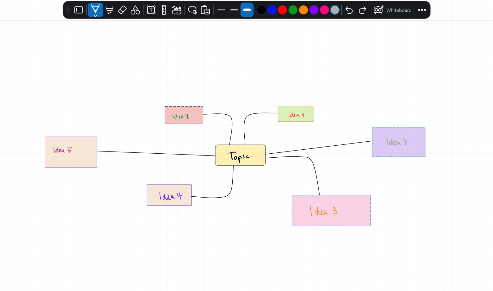
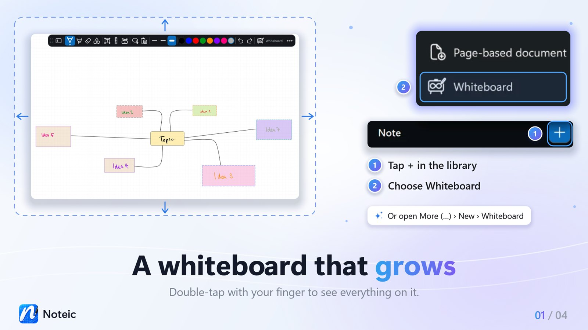
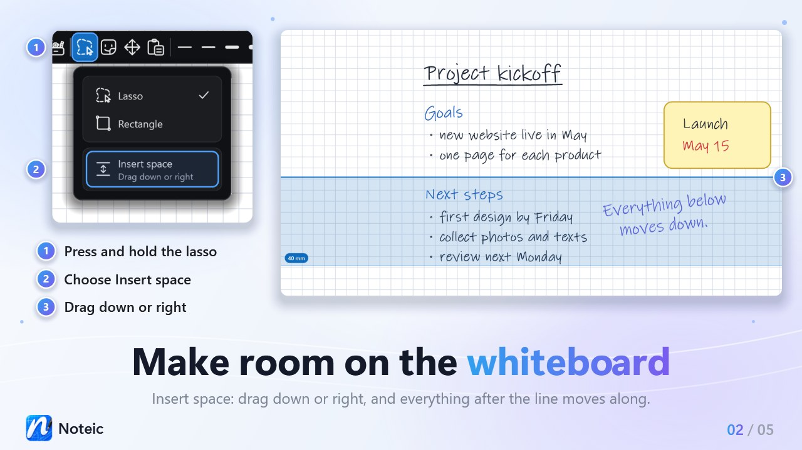
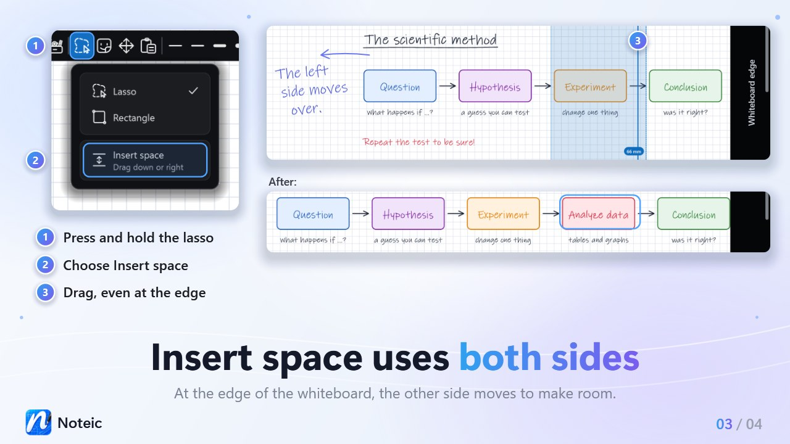
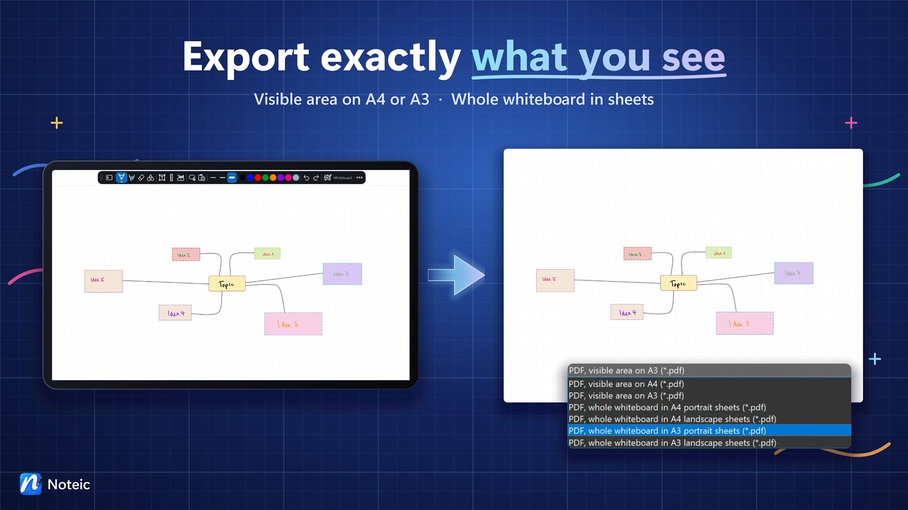

Whiteboard New in 1.5
One page that grows on all four sides as you write. Brainstorms, mind maps and sketches get all the room they need, with the same pens, shapes, text boxes, images and stickers as your notes.

Create a whiteboard#
- In the library: tap + next to Note and choose Whiteboard. Type a name right in the list and press Enter.
- From the menu: open … › New › Whiteboard. A new whiteboard opens in its own tab.
In the library, a whiteboard says Whiteboard under its name. It is a .noteic file like every other note.

Room in every direction#
A whiteboard starts as one landscape A4 sheet. Write, draw or move things near an edge and the page grows on that side. It can grow up to about 5 m to the left and to the right, 1 m up and 20 m down, so about 10.3 × 21.2 m in all. When a side reaches its maximum size, Noteic tells you.
Everything else works as on a page: pens, highlighter, eraser, shapes, text boxes, formulas, tables, images, memo tape, links and stickers. A whiteboard always has exactly one page, so the page overview and Import PDF are only in page-based notes.
See everything#
- Tap Whiteboard in the toolbar, where page-based notes show the page number.
- Or open the zoom menu and tap Show all.
- Or double-tap the whiteboard with your finger. Double-tap again to go back to 100%.
Show all fits everything you wrote into the window, up to 100%. A whiteboard can zoom out further than 25% for this.
Insert space#
Need room between two ideas? Insert space pushes everything after a line out of the way, like in a paper notebook you could stretch.
- Press and hold Lasso selection in the toolbar.
- Choose Insert space (“Drag down or right”). It is only in the menu of a whiteboard.
- Put the pen or mouse down where you want the room and drag.
- Drag down: everything below the line moves down, across the whole width of the whiteboard. Drag right: everything right of the line moves right. Your first movement decides the direction.
- A band in your accent color shows the room, with its size in millimeters. The content moves when you lift the pen.
- Drag up or left to take room away. It stops at the nearest content, so nothing ends up on top of each other.
- At the edge of the whiteboard, when the side you push has no more room, the other side moves the rest of the way. The band shows where the room opens up.
- When neither side can move, Noteic tells you why, for example “Can't make more room: this Whiteboard has reached its left and right edges”.
- What the line crosses stays where it is.
- One move is one step, even when both sides move: Ctrl+Z undoes it.
Insert space stays on until you choose another tool. To select again, press and hold the button and choose Lasso or Rectangle.


Export as PDF#
- Open … › Export as PDF.
- Under Save as type, choose what to save.
- Choose a name and a folder and save.
| PDF, visible area on A4 or A3 | What you see on screen, fitted onto one sheet. This is the default. |
|---|---|
| PDF, whole whiteboard in A4 or A3 sheets | The whole whiteboard at full size, cut into portrait or landscape sheets. |
Noteic remembers your choice for the next export. The PDF is a vector PDF, sharp at any zoom. Zoom out first to put more of your whiteboard onto one sheet.
